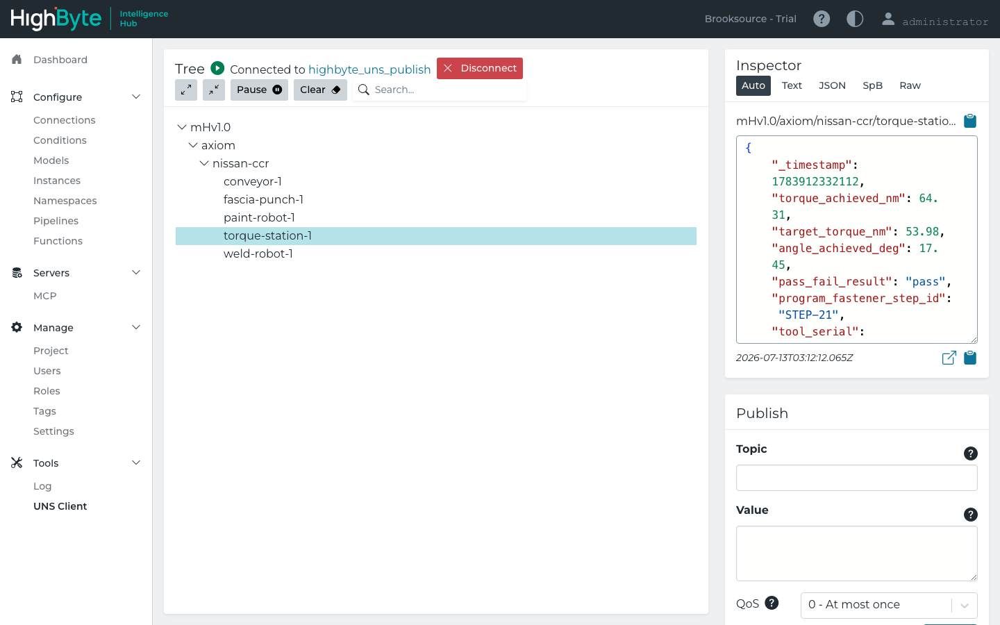
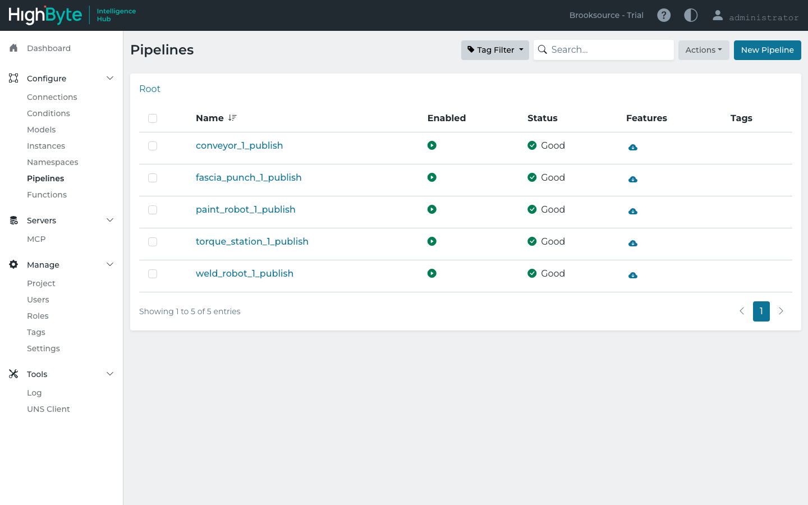
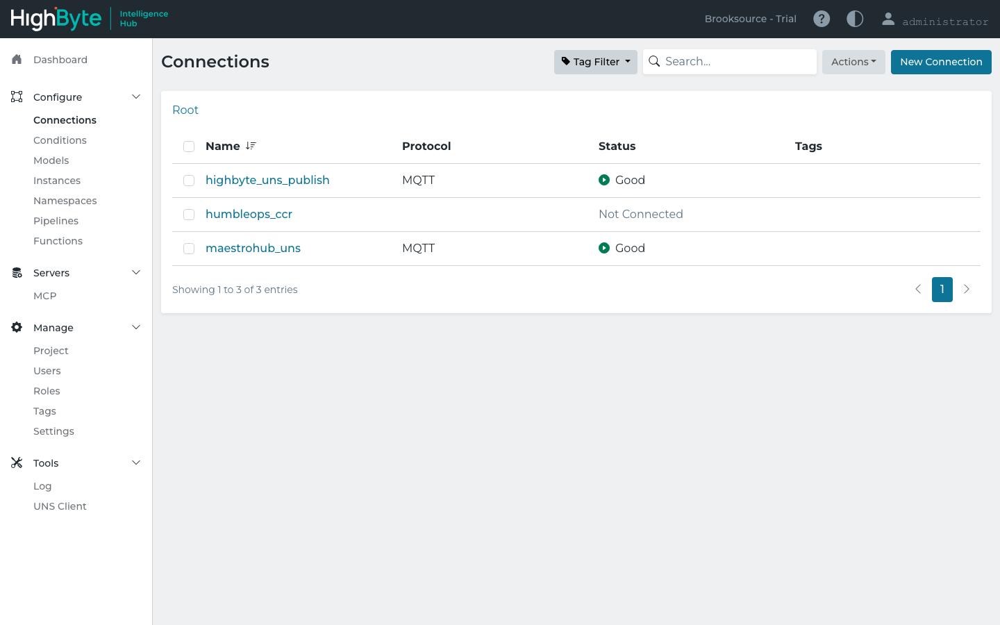
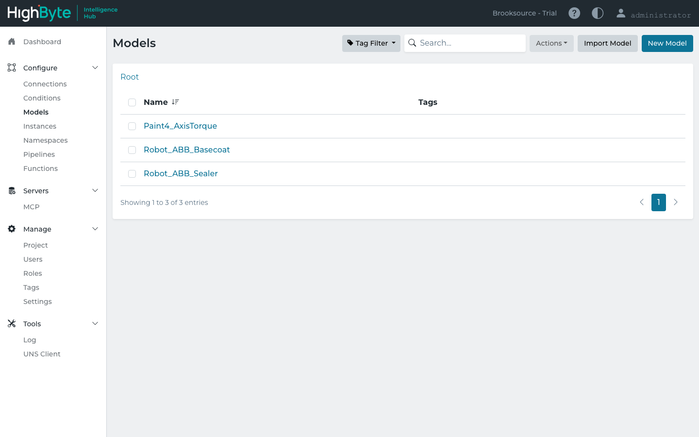
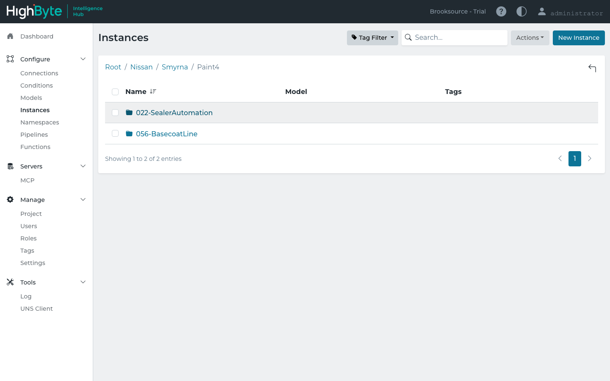
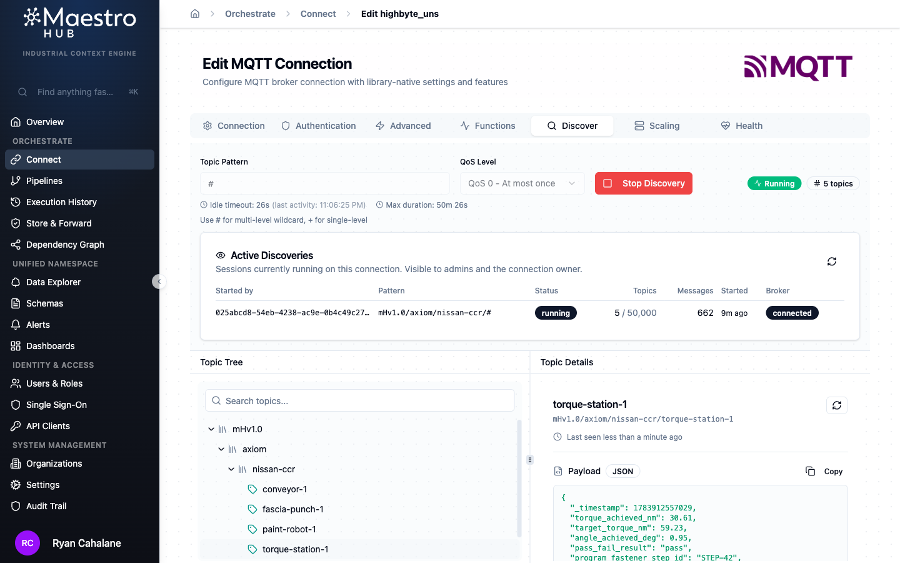
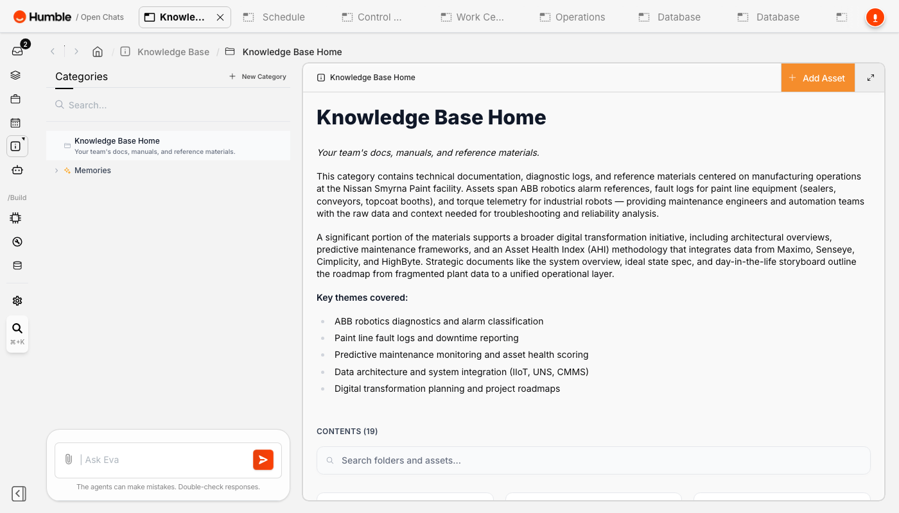

Prepared for
Nissan Smyrna senior management & maintenance leadership
Nissan Smyrna senior management & maintenance leadership
Not a slide of logos — a working system. Two independent OT sources — Nissan Smyrna's own Cimplicity SCADA and an Ignition stand-in for the non-Cimplicity plant areas — publish over OPC UA into a single, standards-governed Unified Namespace. HighByte Intelligence Hub runs that namespace; a second, independent vendor (MaestroHub) reads the exact same feed with zero translation; and Humble's Eva reads it to reason over causal chains, rank interventions, and answer questions against the live database — the actual maintenance-cockpit value. The point of the two-source, two-reader shape: neither the source you have nor the platform you pick ever gates the value.
The Unified Namespace — an i3X / CESMII SM-Profiles-governed MQTT topic tree — is the spine. Sources publish into it; consumers read from it. Neither side is coupled to the other, which is exactly why the platform question never has to stall the value question.
| Equipment | Standard the schema is grounded in | UNS topic |
|---|---|---|
| ABB paint robot (IRB 5500-27) | OPC 40010 — OPC UA for Robotics (MotionDeviceSystem / TaskControl state machine) | mHv1.0/axiom/nissan-ccr/paint-robot-1 |
| Paint shop conveyor section | VDMA 40001 — OPC UA for Machinery, + PackML / ISA-88 TR88.00.02 state machine | mHv1.0/axiom/nissan-ccr/conveyor-1 |
| Fascia punch / piercing press | OPC 40001-2 — OPC UA Metal Forming process values, VDMA forming-machine conventions | mHv1.0/axiom/nissan-ccr/fascia-punch-1 |
| Bodyshop spot-weld robot | OPC 40010 base (robotics) + weld-process fields | mHv1.0/axiom/nissan-ccr/weld-robot-1 |
| Final-assembly torque station | OPC 40451-1 — OPC UA for Tightening Systems (part of the OPC 40450 Joining Systems family) | mHv1.0/axiom/nissan-ccr/torque-station-1 |
"i3X-compliant" should mean a schema conforms to a published, machine-readable information model — an OPC UA Companion Specification or a CESMII SM Profile — not just that it's named after a standard. By that bar, four of the five now sit on real companion specs (the torque station was re-grounded from ISO 5393 onto the OPC UA Tightening Systems companion spec — see below), and one is base-compliant with vendor-defined extensions. Stated plainly: none is a certified SM Profile yet — certification means registering and validating the type model, a defined next step, not a repaint.
| Equipment | Grounded in | i3X information-model status |
|---|---|---|
| ABB paint robot | OPC 40010 — OPC UA for Robotics (a full companion spec) | On trackGenuine information model to conform to |
| Paint shop conveyor | VDMA 40001 — OPC UA for Machinery (+ PackML / ISA-88 state model) | On trackMachinery model + standardized states |
| Fascia punch / press | OPC 40001-2 — OPC UA Metal Forming | On trackReal companion spec |
| Bodyshop spot-weld robot | OPC 40010 base (robotics) + custom weld-process fields | PartialBase compliant; weld fields vendor-defined |
| Final-assembly torque station | OPC 40451-1 — OPC UA for Tightening Systems (re-grounded from ISO 5393) | On trackReal companion spec — result/torque/angle model |
torque_achieved_nm, target_torque_nm, angle_achieved_deg, pass_fail_result — maps directly onto that spec, putting it on the same compliance track as the robots and machinery. Everywhere else, the honest label remains "standards-grounded, SM-Profile-track," not "certified."Equipment pipelines — trigger → validate → publish — write real, contextualized payloads to HighByte's own embedded MQTT broker under the governed mHv1.0/axiom/nissan-ccr topic tree. HighByte's own UNS Client reads the same broker it just wrote to: no custom connector, no re-mapping. The Ignition-sourced bc5602 torque now lands on this same tree, alongside the equipment feeds.

bc5602 node — live, sine-varying axis torque with current timestamps, read straight off this hub's own broker.

highbyte_uns_publish — this hub's own embedded MQTT broker, port 1885. Every pipeline's final stage writes here; every reader subscribes here.The asset structure isn't invented — it's generated directly from Nissan Smyrna's own Cimplicity Shared Name File exports and already sits in HighByte as Models and Instances: all 10 real Base Coat robots (BC5601–BC5610), organized exactly the way Cimplicity organizes them.


MaestroHub — a completely separate product from a different vendor, and the platform this namespace originally ran on — subscribes to HighByte's broker as a read-only client: same topics, same payloads, zero translation. And the Ignition leg proves the mirror image on the source side: a non-Cimplicity system publishes onto the identical UNS with the identical pattern. Whatever platform Nissan lands on, and whatever mix of source systems the plant runs, the namespace keeps working.

Discover tab showing a live discovery session against HighByte's broker: 5 topics, 662 messages, and a real-time JSON payload" loading="lazy" />bc5602 node shows up here too, proving the source side is just as open as the reader side.A UNS that just feeds a chart is a science project. A UNS that feeds causal reasoning, ranked decisions, answerable questions — and the operator-facing cockpit — is a maintenance team's daily tool. Below: Eva's decisioning surfaces (real captures from the running instance), then the Cell 056 Asset Health and OEE views that get built directly on the same namespace.



Once the data is on the UNS, the operator views are just consumers of it. These are what a plant actually watches. Shown here to demonstrate the pattern; the identical views can be built in Humble/Eva, Power BI, Grafana, or Ignition Perspective against the same topics.
The namespace no longer lives only on the plant network. A small read-only bridge subscribes to HighByte's broker and streams its real topics over a Cloudflare tunnel, so any authorized consumer — a browser, a BI tool, a second HMI platform — can read the live namespace without touching OT. Two consumers are wired to it right now.
EventSource subscription. BC5602 axis torque shows live end-to-end whenever the Ignition leg is publishing; the other equipment topics stream continuously. Open the live cockpit →mHv1.0/axiom/nissan-ccr topics and reading the same bridge — the proof the value layer ports across tools. Open the Perspective twin →mHv1.0/axiom/nissan-ccr topics and reading the same bridge as the web cockpit — live in the page above. Open it full-screen →